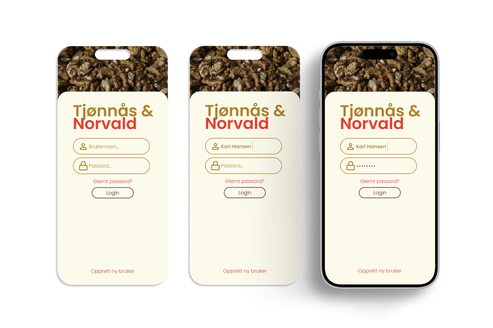
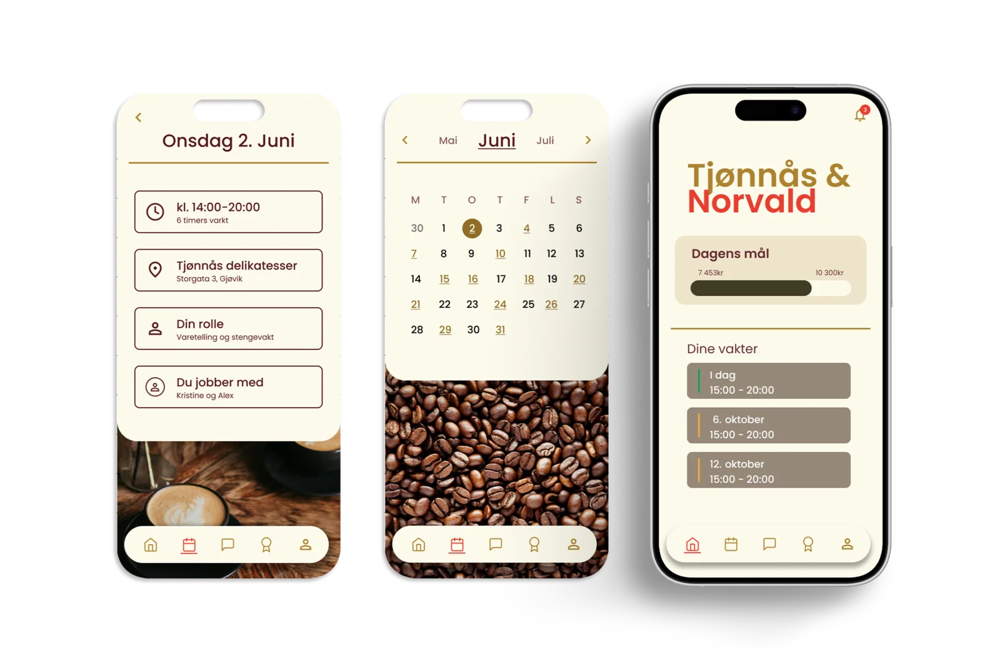
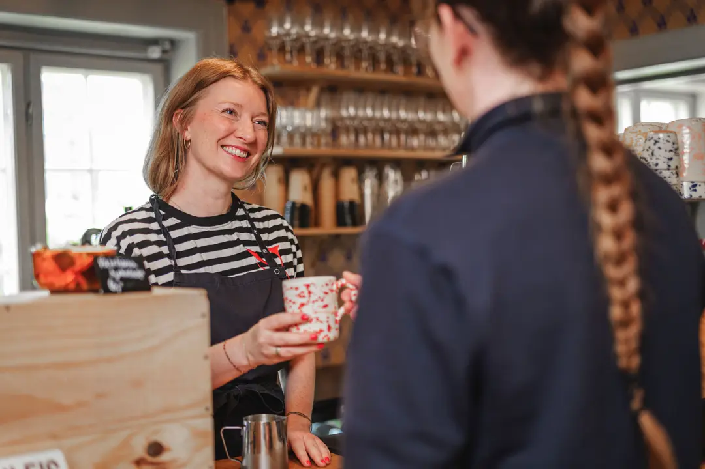

Prosjekter
Tjønnås &
Norvald
UX/UI Design · Ansattportal

Ansattportal for Tjønnås & Norvald — vaktlister, kommunikasjon og opplæring samlet på én plass.
Innsikt fra intervju med daglig leder avdekket at driften var spredt over Messenger og muntlig opplæring. Løsningen er én samlet portal for mobil og iPad.
iPhone 16 Pro Max (utvalgte prototyper)


Innsikt & utfordringer
Jobbhverdagen er spredt på for mange systemer
Intervju med daglig leder (Mari-Mette) avdekket at driften var spredt over Messenger, Apple Notater, separate kassesystemer og muntlig opplæring – uten noen felles struktur.

Hovedproblemer:
Vaktplaner
Håndtert i et separat system uten kobling til felles kommunikasjon.
Internkommunikasjon
Viktig info forsvant i Messenger-tråder.
Opplæring
Kun fysisk og muntlig – tidkrevende og ikke tilgjengelig utenom arbeidstid.
Dokumenter & rutiner
Ingen versjonskontroll. Nye ansatte hadde vansker med å finne frem til riktig informasjon.
Designprosess
Fra innsikt til løsning
Intervju
Kvalitativt intervju med daglig leder ga oss innsikt i reell drift – ikke antagelser. Valget om å snakke med leder fremfor ansatte var bevisst: hun hadde overblikk over tvers av alle smertepunkter.
Affinity map
Funn gruppert i 6 temaer. Kartet avdekket at vaktplan og kommunikasjon var de to hyppigst nevnte problemene – det styrte prioriteringene våre i løsningsdesignet.
Personas & scenarier
Vi utviklet 5 personas, men valgte to primærbrukere: Kari (erfaren) og Eirik (nyansatt). Disse to representerte de mest ulike behovene – og ble brukt aktivt gjennom hele designprosessen.
Wireframes → Hi-fi
Lo-fi skisser ble iterert til hi-fi-prototype i Figma. Vi beholdt et enkelt navigasjonsmønster fremfor avanserte interaksjoner – basert på brukergruppens lave digitale terskel.
Løsningen
Én samlet ansattportal
Portalens kjerneområder samler det som tidligere lå spredt på ulike plattformer – tilgjengelig på mobil og iPad.
Landing page
Én startside erstatter morgenmøter og oppslagstavler. Daglige mål og beskjeder er der fra første sekund på skiftet.
Vaktliste
Ansatte sjekker vaktene sine hjemmefra. Kalendervisning med detaljkort eliminerte behovet for å møte fysisk for å planlegge fri.
Chat & kommunikasjon
Viktig info forsvinner ikke lenger i Messenger-tråder. Kanalen har historikk og varsler – og er adskilt fra privat meldingsutveksling.
Digital opplæring
Nyansatte kan forberede seg hjemmefra og slå opp rutiner alene på jobb. Reduserer avhengigheten av erfarne kollegaers tid.
Dokumenter & rutiner
Én kilde til sannhet med versjonskontroll. Ingen utdaterte utskrifter eller usikkerhet om hvilken versjon som gjelder.
Min side
Profil og innstillinger tilpasset arbeidssted. Gir ansatte eierskap til egne data og notifikasjoner.
Mobilprototype — Scenario 1
Kari sjekker vaktlisten hjemmefra
Innsikten: Intervjuet avdekket at erfarne ansatte måtte møte fysisk på jobb bare for å sjekke vaktplanen – en daglig friksjon som skapte usikkerhet rundt fri og ferie.
Designvurderingen: Vi valgte kalendervisning med detaljkort per dag. Grepet gir Kari full oversikt over tidspunkt, lokasjon og hvem hun jobber med – tilgjengelig når som helst, uten å måtte kontakte leder.
iPad-prototype — Scenario 2
Eirik fullfører sin første opplæringsmodul
Innsikten: Nyansatte hadde kun tilgang til muntlig og fysisk opplæring. Ved første selvstendige vakt var det ingen måte å slå opp rutiner på egenhånd – noe som skapte usikkerhet og belastet erfarne kollegaer.
Designvurderingen: iPad er allerede i bruk på arbeidsplassen, så vi designet opplæringsmoduler tilpasset den. "Min trening"-biblioteket med steg-for-steg videoer gir Eirik en visuell og selvstendig måte å lære på, i eget tempo og uten å avbryte andre.
Mitt bidrag
Hva jeg eide i dette prosjektet
Jeg ledet brukerinnsikten og utarbeidet intervjuguiden som la grunnlaget for hele prosessen. Jeg hadde ansvar for utvikling av personas og scenarier – inkludert de to primærbrukerne Kari og Eirik. I designfasen tok jeg rollen som UI-designer på mobilflaten: fra lo-fi-skisser til ferdig hi-fi-prototype i Figma, med fokus på tilgjengelighet og WCAG-krav.
Gruppe 01
Teamet bak prosjektet
Josefine Reichelt Gjertsen
Intervjuguide · Personas · UI-design (mobil)
Herman Brenn-Svendsen
Sitemap · Prototyper · Wireframes
Tia Linnea Dahl
Designmanual · Personas · Rapport
Axel Bruusgaard Jewett
Prototyper · Wireframes · Intervju
ekstramateriale
Designmanual
Et eksperiment utenfor oppgavens rammer: 17. april brukte jeg Figma-filen fra prosjektet som kilde og testet Claude Design — lansert samme dag. Jeg definerte layout, retning og struktur gjennom noen runder med prompting og redigering. Resultatet er nettsiden du kan se her. Designet, kildemateriellet og redaksjonell kontroll er mitt; AI-en var verktøyet.